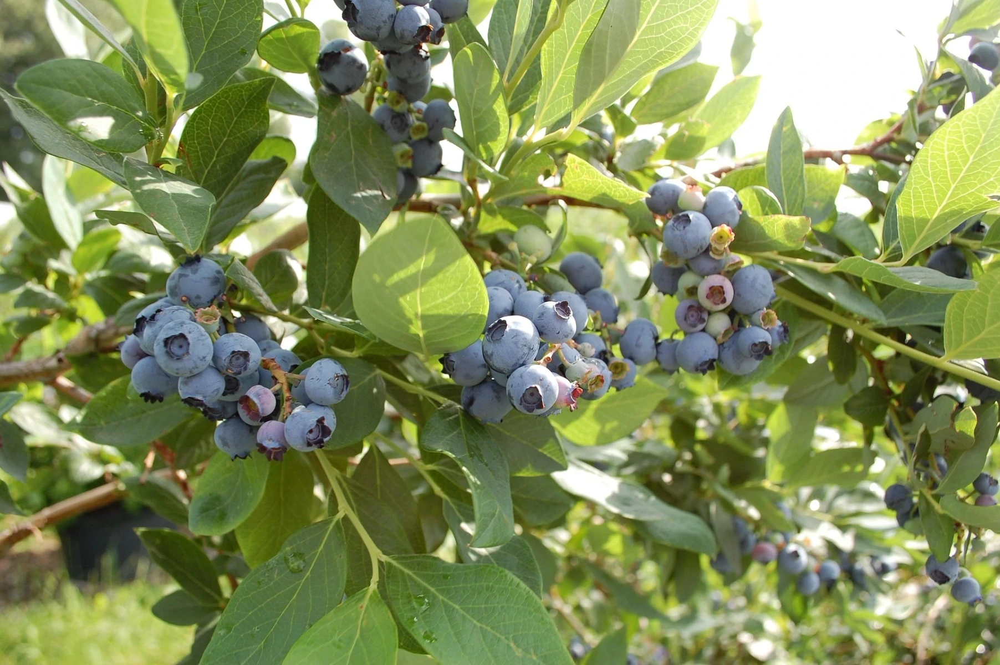

Jak rozpoznać dobrej jakości borówki w sklepie lub na targu ?
Zakup świeżych i smacznych borówek to gwarancja udanego deseru, koktajlu czy po prostu zdrowej przekąski. W sklepie czy na targu wybór bywa duży, ale jak spośród wielu opakowań i skrzynek wybrać te najlepszej jakości? Oto kilka prostych wskazówek, które pomogą Ci rozpoznać dojrzałe i świeże borówki.
1. Wygląd: Zwróć uwagę na kształt i jędrność owoców. Dobrej jakości borówki powinny być pulchne i jędrne. Unikaj owoców pomarszczonych, miękkich, zgniecionych lub wyglądających na przesuszone. Kolor powinien być jednolity, głęboki, niebiesko-fioletowy. Zielonkawe zabarwienie oznacza niedojrzałość.
2. Nalot (pruina): Świeże borówki często pokryte są delikatnym, białawym lub szarawym nalotem. To naturalna warstwa woskowa, która chroni owoc przed utratą wilgoci i uszkodzeniami. Jej obecność jest dobrym znakiem świeżości i świadczy o tym, że owoce nie były nadmiernie manipulowane.
3. Opakowanie: Jeśli borówki są w opakowaniu (np. plastikowej kobiałce), sprawdź dno. Wilgoć, zgniecione owoce czy plamy na dnie mogą świadczyć o tym, że owoce na spodzie są uszkodzone lub przejrzałe. Borówki nie powinny być też upakowane zbyt ciasno, aby uniknąć zgniecenia.
4. Zapach: Świeże, dojrzałe borówki mają subtelny, słodkawy, przyjemny zapach. Jeśli czujesz zapach fermentacji, pleśni lub jest on nieprzyjemnie kwaskowaty, lepiej zrezygnować z zakupu.
5. Smak (jeśli możliwy): Na targu często można spróbować owoców. Dobre borówki powinny być słodkie, z lekką, orzeźwiającą kwaskowatością. Smak to najlepszy wskaźnik dojrzałości i jakości.
Wybierając borówki z uwagą na te szczegóły, zwiększasz szansę na zakup owoców, które zachwycą Cię smakiem i wartościami odżywczymi. Smacznego!